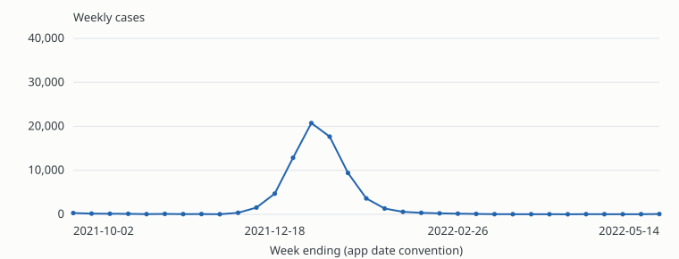
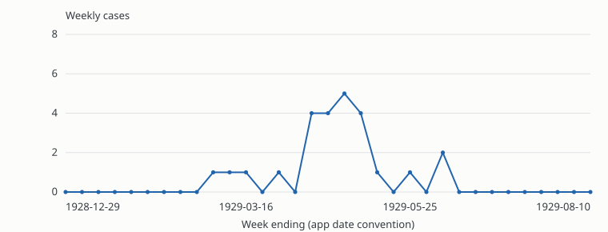
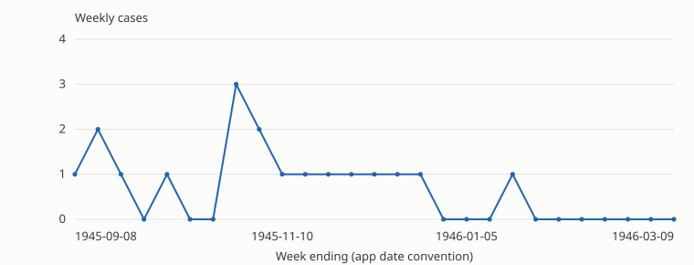
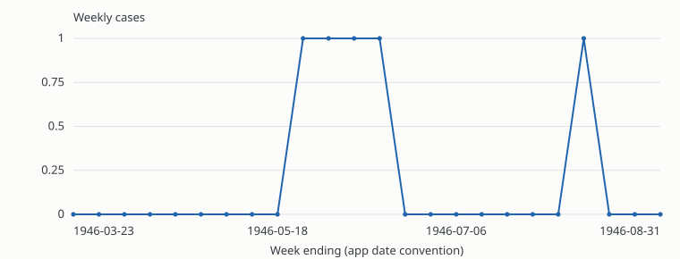
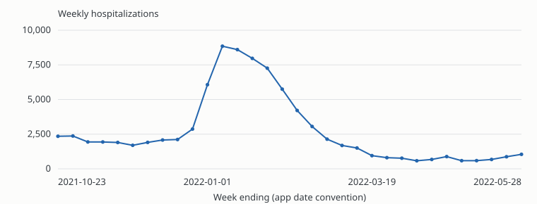
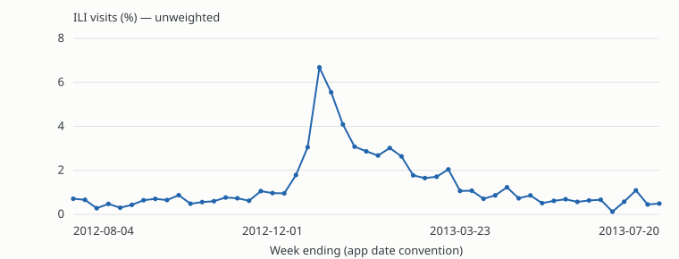

Recognize excess occurrence. Explain your judgment.
Tutorial draft v0.1 · For study-team review · Nothing entered here is saved.
What are you judging?
Does the evidence support disease occurrence above what is normally expected for this time, place, and population?
The starting point is the CDC definition of an outbreak. Consider the observation period, the geographic area or setting, the population covered, and a defensible expectation for that context.
Excess relative to expectation is the key. A visible peak is not sufficient. A low absolute count does not rule an outbreak out.
Two weeks is an example of a time interval, not a universal cutoff. Neither a smooth curve nor a completed decline is required.
Your annotation is a judgment of the supplied evidence, not confirmation by a public-health investigation.
Definition: CDC outbreak and case definitions. The response rules and confidence anchors in this tutorial are proposed IDOBE guidance.
Read the evidence before the curve
Measure: are these cases, hospitalizations, or ILI visit percentages? They are not interchangeable.
Time and place: read the dates, disease, and location. Weekly surveillance values are not necessarily illness-onset counts.
Population: use the stated surveillance coverage. Do not infer a school, exposure group, or complete population from a place name.
Expectation: use a credible historical, seasonal, or otherwise comparable reference. The first or lowest point is not automatically “normal.”
Limitations: consider gaps, reporting changes, interpolation, and a window that cuts off part of an event.
The current app does not provide an explicit expected baseline or population description. If that prevents a defensible judgment, choose Unsure. If your expertise supplies a comparator, explain its basis.
Hospitalizations and ILI percentages can be supporting signals, but their use needs a study-wide proxy policy. Do not silently interpret them as disease-case counts.
A defensible comparator exists and the evidence favors occurrence above expectation.
Not an outbreak
Sufficient context supports consistency with expectation, or a documented artifact adequately explains the apparent excess.
Unsure
You reviewed the evidence but cannot make a defensible positive or negative judgment.
Skip
You are not making an assessment: outside your expertise, stopping work, or unable to inspect the item.
Unsure: “I assessed it; the evidence is indeterminate.” Skip: “I am not assessing it.” Low confidence: “I can explain my leaning, but substantial doubt remains.”
Missing context is not evidence of no outbreak. If a binary choice would be arbitrary, use Unsure.
In the current app, skipped items leave your ordinary queue. Reopen them in My annotations if needed. Unsure counts toward coverage; Skip does not. Skip is not a “remind me later” action.
Confidence belongs to your response
Score
For a positive or negative judgment
1 · Very low
A weak but explainable leaning; major limitations could reverse it.
2 · Low
One interpretation is somewhat better supported; substantial doubt remains.
3 · Moderate
A defensible interpretation with a meaningful unresolved limitation.
4 · High
Clear evidence and a credible comparator; limitations are unlikely to change the label.
5 · Very high
Compelling evidence and an appropriate comparator; no material unresolved limitation is apparent.
Unsure + high confidence means you are confident the supplied evidence cannot resolve the question. It does not mean high confidence in an outbreak. Lower confidence in Unsure means you are less certain whether a directional judgment can be made.
Skip has no confidence score. The scale is not a probability, severity, or case-volume scale.
Useful comment: “Compared with [reference and its basis], [evidence]. Main limitation: [missing context or alternative explanation].”
Discuss real, high-confidence annotations
These are candidate teaching examples from the local database. Each has one annotator, no source comment, and a recorded confidence of 4 or 5. They are not consensus answers.
Inspect the chart, then reveal the prior label. Explanations are new draft interpretations, not the annotator’s recorded reasoning. The earlier ratings predate this rubric.
COVID-19 · Mozambique · #4690

Stored weekly values; no expected baseline is supplied.Reveal prior annotation and discussion
Recorded: Outbreak · 5/5. Annotation #39. The first eight values range from 50–296; the peak is 20,747 in the week ending January 1, 2022.
A sustained departure supports considering excess. Why are surrounding weeks a credible reference, and is reporting comparable? If those conditions hold, Outbreak is supported. Do not automatically copy the prior 5/5.
Poliomyelitis · Florida · #3406

Stored weekly values; no expected baseline is supplied.Reveal prior annotation and discussion
Recorded: Outbreak · 4/5. Annotation #18. After nine initial zero weeks, a later four-week run is 4, 4, 5, 4.
If a near-zero expectation is credible for that historical setting, small counts can represent excess. A universal minimum count would miss this distinction.
Poliomyelitis · New Mexico · #1426

Stored weekly values; no expected baseline is supplied.Reveal prior annotation and discussion
Recorded: Not an outbreak · 5/5. Annotation #43. Weekly values range from 0 to 3.
This is a candidate negative only if sporadic low occurrence fits a credible expectation. Few cases and no big peak are insufficient by themselves. If historical context prevents deciding, Unsure is defensible.
Smallpox · Kansas · #7196

Stored weekly values; no expected baseline is supplied.Reveal prior annotation and discussion
Recorded: Not an outbreak · 5/5. Annotation #57. Five weeks have one case, including four consecutive weeks.
Use this as a discussion case, not a canonical negative. What was expected in Kansas in 1946? Were these cases linked? Do not substitute today’s disease context. With insufficient historical context, Unsure is defensible.
COVID-19 · Georgia (GA) · #9308

Hospitalizations as labeled in the source; not disease-case counts.Reveal prior annotation and discussion
Recorded: Outbreak · 5/5. Annotation #54. The peak is 8,849 in the week ending January 8, 2022.
This is a hospitalization signal. Its interpretation needs an appropriate comparator and the study’s proxy policy. It does not independently identify case incidence or a shared exposure.
ILI · Minnesota · #10778

Unweighted ILI visit percentage, not a case count or pathogen diagnosis.Reveal prior annotation and discussion
Recorded: Outbreak · 5/5. Annotation #33. The peak is 6.67769% in the week ending December 29, 2012.
Assess excess against an appropriate seasonal expectation. A winter wave alone does not establish excess. Interpret the percentage using the study’s proxy policy.
These scenarios are hypothetical. There are no Unsure or Skip examples in the current annotation snapshot.
A clear rise, but seasonality could explain it and no defensible comparator is available.
Unsure. High confidence is appropriate if you are confident the missing context prevents resolution. You have reviewed the evidence and identified what is missing.
A credible comparator exists. You lean toward real excess, but a reporting change could explain part of it.
Outbreak, confidence 1–2 if you can explain why real excess is somewhat better supported. If the competing explanations cannot be distinguished, use Unsure.
Counts appear consistent with a supplied baseline, but incomplete reporting remains a concern.
Not an outbreak, confidence 1–2 if the negative interpretation is defensible and slightly better supported. Otherwise, Unsure.
The disease or surveillance system is outside your expertise.
Skip; no confidence score. You are not making an assessment. An expertise note is helpful.
Neither the chart nor the values table loads.
Skip; no confidence score. This is a technical obstacle. Report the problem if possible. If the table works, you may still be able to assess the item.
Before submitting an annotation
I checked the measure, time window, place, and available population context.
I can explain the expected baseline, or I chose Unsure because I cannot.
My label concerns excess relative to expectation.
My confidence describes my selected response.
My comment explains any consequential missing context or alternative explanation.
Draft review: adjudicate the example labels and comparator rationales, agree how proxy measures are used, and reserve tutorial examples outside the blinded evaluation pool before rollout.
In production, this step could offer “Begin annotation.” This preview does not start a session or save completion.